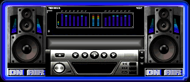
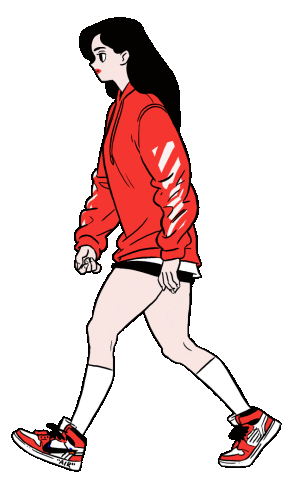
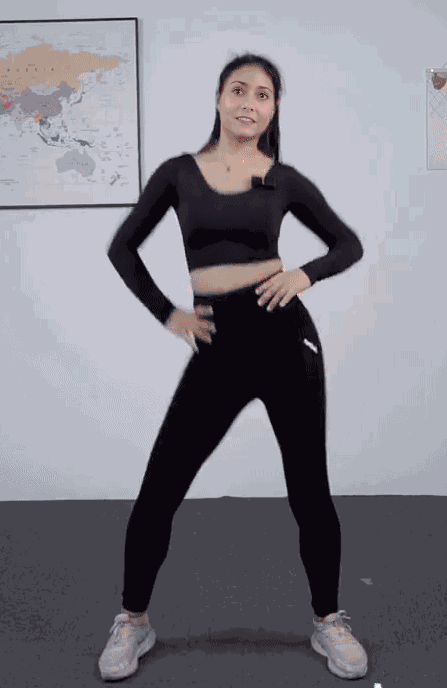

| (Rose
tijdt alleen *)
Groene tijdt, complete pagina.. Tip voor het lopen,let op de klok tot de minuut omspringt, Loop van tv, om de kamer tafel, naar de keuken,langs aanrecht,naar de kamer en terug naar de tv tot 1 minuut om is. Dan weet je hoeveel rondjes 1 minuut is. Bij mij zijn 4 rondjes 1 minuut dus 5 min zijn 20 rondjes.. Heb je een baan, doe deze dan elke dag VOOR het avond eten en om 21:00 een dag fitness 2 de andere dag fitness 3.. |
FITNESS 1 9:45/10:45/11:45/12:45-fitness 2 /14:45/15:45/16:45/17:45/18:45. |
Voor
een gezond resultaat wordt aangeraden elke dag 30 minuten te lopen.Met
deze pagina heb je na 1 dag 43 min gelopen en met de overige stappen 60
min, dat zijn 7000 stappen per dag...  |
| 10 x
|
5 minuten
lopen, na elke minuut 1 ronde om en om de knie liften  * |
60 x
LINKS = 1 TEL  |
| 60 x
BUIK lift (handen in de zij) * |
60 x
LINKS = 1 TEL
|
10 x
R.front kick = 1 tel
* |
| Goed gedaan,
tot over een uur..
|